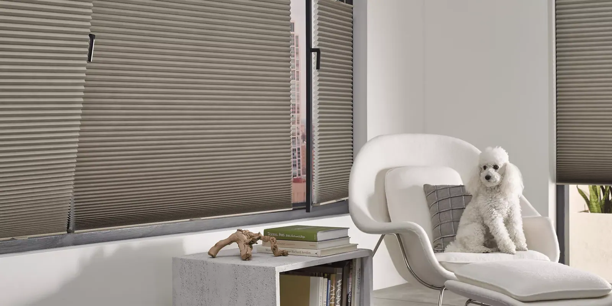
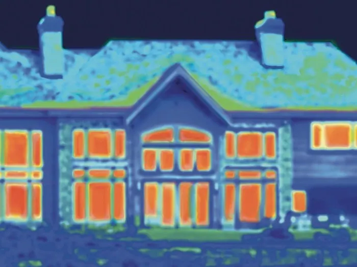
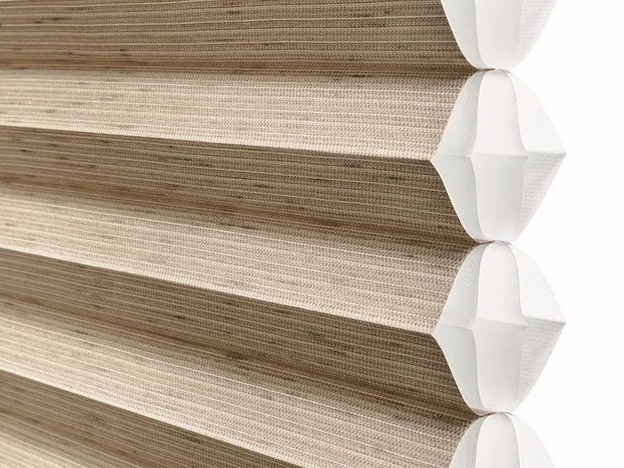
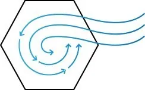
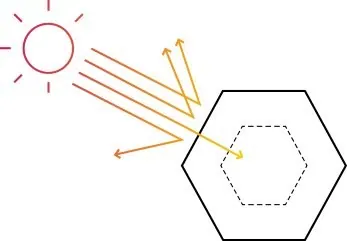
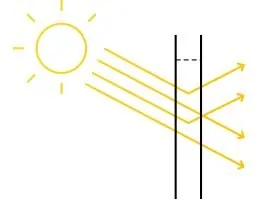
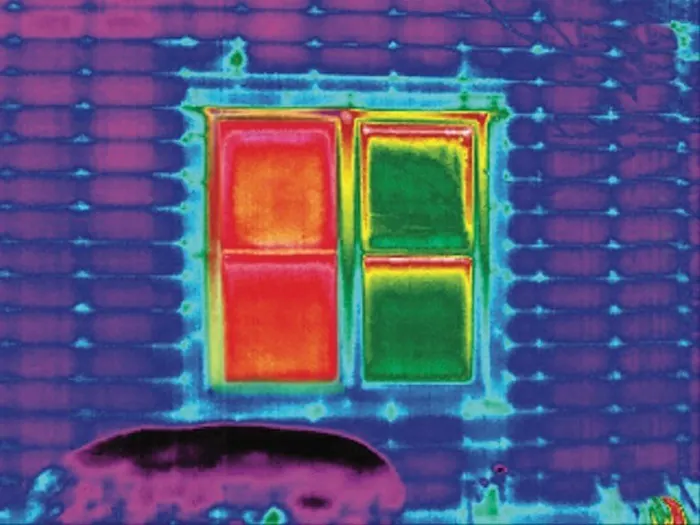
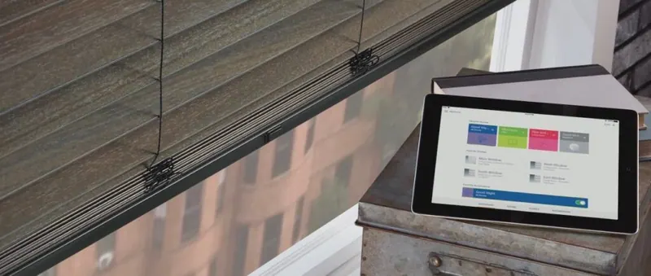

Blinds and shades by function
Energy efficient blinds and shades
Without energy-efficient window treatments, as much as 30% of a home's heating and cooling energy can be lost through its windows.
Avoid energy loss at the window
Without energy-efficient window treatments, as much as 30% of a home's heating and cooling energy can be lost through its windows. Here at Custom Windows & Upholstery, we have a variety of shades that are designed to reduce the amount of solar heat that passes through the window, known as the Solar Heat Gain Coefficient (SHGC). The lower the SHGC, the more protected your home is from the sun's heat. To enjoy the sun's warmth when desired, simply raise or open the shade and invite it in.

Keep your home warmer or cooler as needed
To maximize energy savings at the window, we recommend Duette® honeycomb shades from Hunter Douglas. Hunter Douglas invented the highly energy-efficient Duette® honeycomb shades in 1985, in response to the energy crisis of the late 1970s. In 2006, Hunter Douglas created the Duette Architella® honeycomb fabric, which features a honeycomb-within-a-honeycomb design for even more insulation and greater energy efficiency at the window.

How energy conservation works
Energy efficient window treatments help conserve at the window in many important ways:
Insulation
In winter months, your home heating escapes to the outdoors through your windows while in the summertime, the outside heat flows into your home through these same windows. With window treatments that provide insulation, you can reduce energy consumption, save on heating and cooling costs, and create a more comfortable atmosphere.

Solar heat control
The warmth provided by the sun, its solar energy, may be desirable during the winter to help heat your home, but in the summer, it can make a room overly hot and uncomfortable—driving up air conditioning costs. Many Hunter Douglas window treatments help to control solar heat by allowing it into your home in the winter and minimizing the amount that comes in during the summer.

Daylighting
Daylighting is the practice of lighting rooms with natural light rather than artificial light. By drawing natural light into a room many of our window treatments reduce the need for other types of lighting, thereby reducing your energy use.

5 tips for saving energy at the window
1. Ensure your windows and doors are properly weather-stripped. 2. Caulk around basement and storm windows. 3. When heating or cooling, keep windows locked. 4. Open your window coverings during sunny and cold days to catch free solar heat; then close them at night to keep that heat in. 5. Close your window coverings during very warm days to keep the heat out.

Questions we hear often
Can you help me choose the right window treatment?
Yes. Whether you are shopping for a single window treatment, redecorating your entire house or solving a complex design challenge, we visit your home, look at every window with you and recommend options that fit how you use each room.
Do you measure and install window treatments?
Yes. We take care of measuring and installation. Our experienced installers are fully trained and will ensure a perfect fit for your new window treatments, and they show you how everything works before they leave.
More blinds and shades by function

Light filtering
Adding light-filtering window treatments to your home transforms harsh sunlight into a softer light, reduces glare, and protects your possessions from fading.
Explore Light filtering
Blackout
If you want to block out as much natural light as possible, consider Duette® Honeycomb Shades with LightLock™.
Explore Blackout
Automated
Custom Windows & Upholstery offers motorized blinds, shades, sheers and shutters that offer easy operation and increased child and pet safety.
Explore Automated

Let’s look at your windows together.
A free visit, real samples, and an honest recommendation. No pressure to buy on the spot.